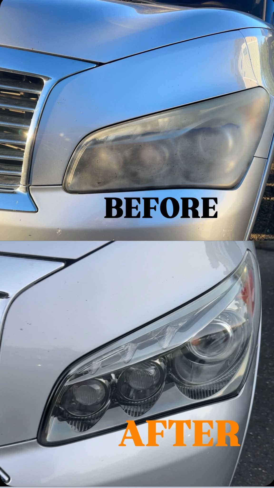
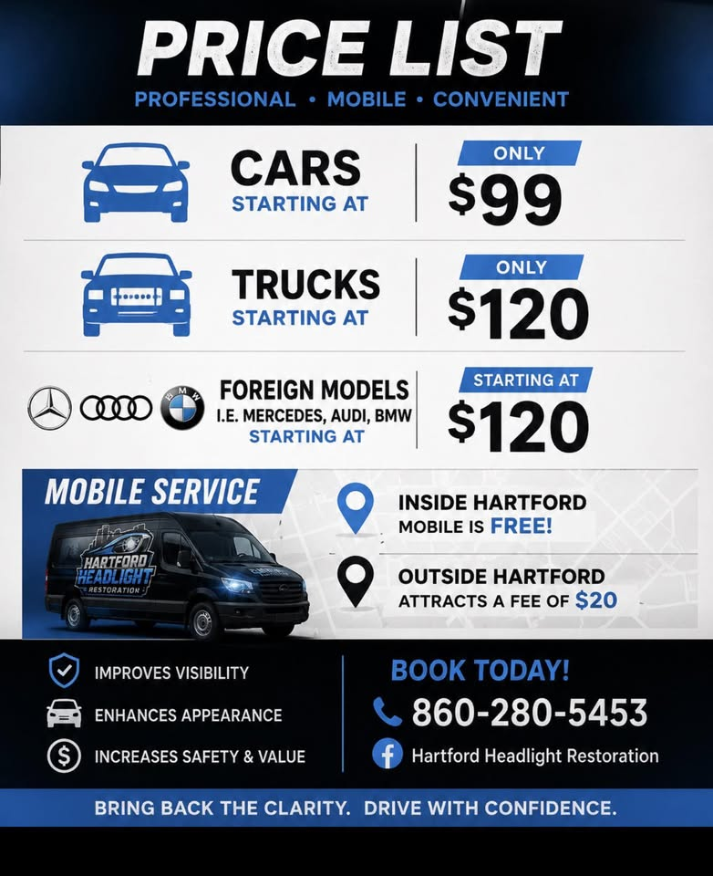
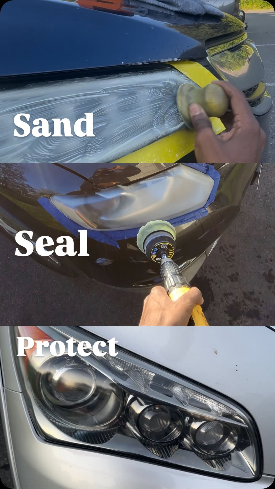
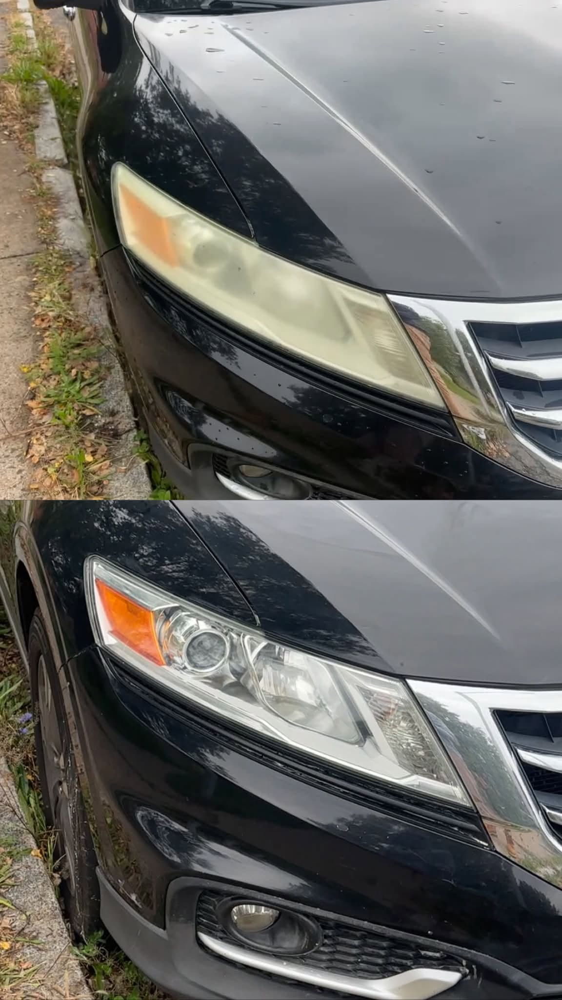
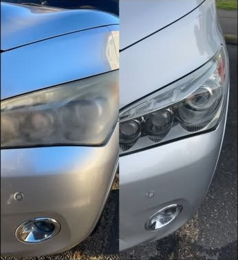

Only
Cars
$99
Starting price for a car.
Homepage concept by Creative Tugs
Book a callHartford, Connecticut · Mobile headlight restoration
We come to the car. Yellow, dull lenses get sanded, sealed, and protected, with a 2-year warranty on every restoration.

Inside Hartford, mobile service is free. Outside Hartford, the trip fee is $20.
Based at Main Street, Hartford, CT 06112. Listed as always open.
Price list
Rates from their published price list. A 13 October post also advertised service starting at $89, plus a $99 special.
Only
$99
Starting price for a car.
Only
$120
Starting price for a truck.
Starting at
$120
Mercedes, Audi, BMW, and similar.

On the driveway
The same three steps they show on the job. Fog comes off, the lens clears, and the finish is protected before we leave.

The oxidized film comes off the lens so the yellow haze is gone, not covered up.
The surface is refined until the reflectors and the road ahead read clear again.
Every restoration includes their 2-year warranty. Mobile service, at your house or wherever the car is parked.
Why people book it
Yellow lenses throw a dull beam. A clear lens puts the light back on the road.
A cloudy headlight makes a clean car look tired. The after photos are the point.
Their price list puts it plainly: clearer lights, a better looking car, and a restoration instead of a replacement.
Recent jobs


Facebook recommendations
Super quick, super professional, looks fantastic as promised.
They came to my house and they done a wonderful job.
Before the light was yellow and dull. They came out brand new after. I recommend.
Super professional, on time, and easy to deal with. You can tell they actually care about the quality of the work, not just rushing through it.
If your headlights are faded at all, don’t even think twice. This is 100% worth it.
Great work! And he is such a great guy!
Book today
They restore headlights in Hartford and come to you. Inside the city, the mobile visit is free.